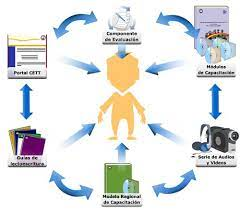

Marco operativo
Definición 1:
Tiene como objetivo la planificación de las acciones que se deben ejecutar para llevar a cabo la investigación. La importancia
radica en la necesidad de ejecutar adecuadamente lo previsto en el Marco Metodológico.
Técnicas de recolección de datos:
Utilizaremos para esta investigación las técnicas de encuesta y entrevista
Trabajo de campo:
El trabajo de campo es un método de observación y recolección de datos sobre personas, culturas y entornos naturales. Generalmente,
el trabajo de campo se realiza en la naturaleza de nuestro entorno cotidiano y no en los entornos semicontrolados de un laboratorio
o un aula
|
|
|
|---|---|
|  |